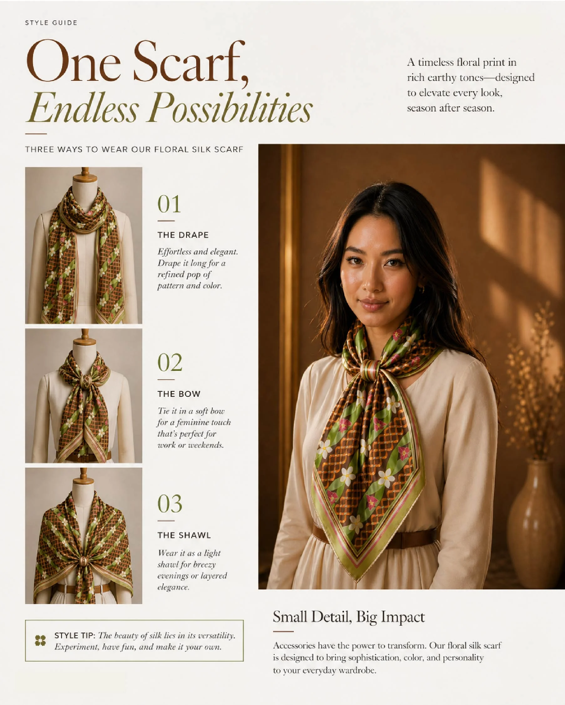

Textile Design
The Singapore Garden Collection
Year
2021
Category
Identities
Medium
Textile Design
Location
Singapore, Singapore
The Singapore Garden Collection is a retail and textile design concept inspired by the quiet beauty of Singapore's natural and urban landscapes. Rooted in familiar botanical elements — orchids, frangipani, bougainvillea, and ixora — the collection translates everyday observations into wearable design.
The project integrates print design, product application, and spatial merchandising, creating a cohesive retail experience within a Gardens by the Bay souvenir shop context. It explores how storytelling, materiality, and environment can come together to elevate a simple accessory into an expressive lifestyle piece.
